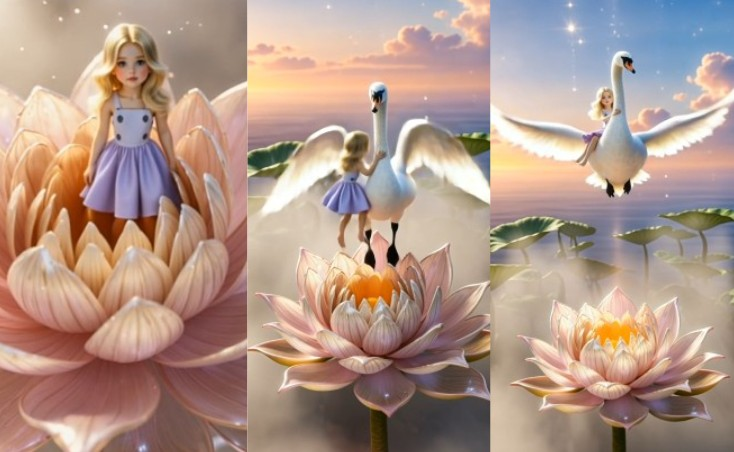

It all started with simple curiosity. I wanted to see if a machine could truly capture "beauty." Could an algorithm understand the softness of a flower petal or the grace of a dance?
At first, I was just playing around with light and simple characters. But very quickly, it turned into something much more. I found myself building entire worlds—eventually leading to a full visual fairy tale inspired by Thumbelina: a girl appearing inside a blooming flower, dancing, and finally flying away on a majestic swan.
You can watch one of the results here:
View the Reel ▶The "Aha!" Moment (and the Bloopers)
In the beginning, things didn't look magical at all. I dealt with characters "breaking" mid-motion, scenes that felt disconnected, and some very strange artifacts. At one point, I asked for a circular motion and the AI literally gave me a floating metal ring!
The turning point was realizing that AI doesn't "understand" intent—it interprets instructions. I stopped asking and started guiding.
Deep Dive: Why Kling AI?
I experimented with several tools, but Kling AI became my go-to for serious storytelling. If you're looking to move past "basic" generations, here are the technical features that changed the game for me:
1. The Power of High Quality (HQ) Mode
While the "Standard" mode is great for quick drafts and checking movement, High Quality Mode is where the cinematic magic happens.
Resolution & Texture: It significantly improves skin textures, fabric movements, and environmental details (like the feathers on my swan).
Consistency: The AI maintains the character's face and limbs much better during complex movements, reducing that "melting" look we all dread.
Pro Tip: Use Standard mode to find the right "vibe," then re-generate your best prompts in HQ for the final export.
2. Mastering "Omni" (Create in Omni)
Kling's Omni Mode is a game-changer for creators who want more control. It's designed to handle multi-modal inputs more effectively.
Better Context: Omni is fantastic at understanding the relationship between the foreground and background. In my Thumbelina project, it helped keep the girl "attached" to the flower realistically.
Complex Prompts: If you have a long, descriptive prompt with specific lighting and camera angles, Omni tends to follow those instructions more faithfully than the base model.
My "Secret Sauce" for Prompts
Through trial and error, I developed a few rules that actually work:
- Be Surgically Specific: Don't just say "lighting." Say "soft cinematic backlight, 8k, golden hour glow."
- Avoid Ambiguity: Avoid words like "vortex" or "orbit" unless you want literal circles appearing in your video. Describe the camera movement instead (e.g., "slow 360-degree panning shot").
- Break it Down: It is much better to create 2–3 short, perfect clips and stitch them together than to try and force one 10-second complex animation.
Editing is 50% of the Magic
Even the best AI output needs a human touch. I use simple editors like CapCut or Canva to breathe life into the raw footage. Adding light flashes, sparkles, and—most importantly—the right music is what transforms a "generation" into a "story."
Try Kling AI →Final Thoughts
AI isn't a "make it beautiful" button. It's a sophisticated brush that requires patience, experimentation, and a bit of a creative soul.
At first, it was frustrating. Then it became exciting. Now? It's slightly addictive. There is something truly special about seeing a world that existed only in your head suddenly appear on a screen.